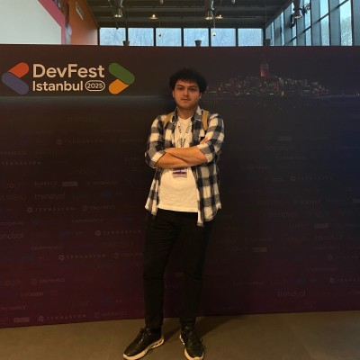

Portfolyoma Hoş Geldiniz
Yapay zeka, modern yazılım teknolojileri ve teknoloji felsefesi üzerine düşünen, üreten bir son sınıf üniversite öğrencisiyim. Geliştirdiğim projeler ve yazdığım makalelerle geleceğin teknolojilerine yön vermeye hazırlanıyorum.

Bitirme projesi kapsamında, kullanıcı verilerinin gizliliğini ihlal etmeden kredi kartı sahtekarlıklarını tespit edebilen dağıtık bir yapay zeka modeli geliştirdim.
Geliştirme aşamasındaki diğer çalışmalarım yakında burada yer alacak.
Okulların öğrencileri iş hayatına ne kadar hazırladığı, artan yapay zeka bağımlılığı ve geleceğin mesleklerinin nasıl şekilleneceği üzerine değerlendirmelerim.
Yazıya GitTeknik detaylarda boğulmadan, sadece akışta kalarak kod yazmanın verdiği özgürlük hissi ve bunun yaratıcı sürece olan olumlu etkileri.
Yazıya Gitİstanbul Atlas Üniversitesi
Yapay zeka, makine öğrenmesi ve yazılım geliştirme üzerine yoğunlaştığım lisans eğitimimin son yılındayım. Bitirme projesi olarak federe öğrenme üzerine çalışıyorum.
Agito Software Consulting
Veritabanı tasarımı ve SQL sorgu optimizasyonu üzerinde çalışarak, iç sistemlerde veri bütünlüğüne ve performans iyileştirmelerine katkı sağladım.
Medium & LinkedIn
Öğrencilik hayatı, yapay zeka entegrasyonu, vibe-coding ve geleceğin meslekleri üzerine araştırma yapıyor ve makaleler yayınlıyorum.
Zurich Sigorta
Doğrudan teknik destek sağladım, sorun giderme taleplerini ele aldım ve şirket genelinde son kullanıcı sistemlerinin sorunsuz çalışmasını sağladım.
Zurich Sigorta
Çalışanlara teknik sorunları tespit edip çözerek pratik destek sağladım ve kuruluş genelinde kullanıcı deneyimini iyileştirdim.
LC Waikiki
Alışveriş süreci boyunca müşterilere yardımcı oldum ve mağazanın düzenini sağladım, böylece sorunsuz ve verimli bir perakende ortamının oluşmasına katkıda bulundum.
Projelerim, yazılarım veya ortak çalışma fırsatları hakkında konuşmak istersen bana her zaman ulaşabilirsin.
Bana E-Posta Gönder© 2026 Berk Yağız KALAFAT. Tüm hakları saklıdır.